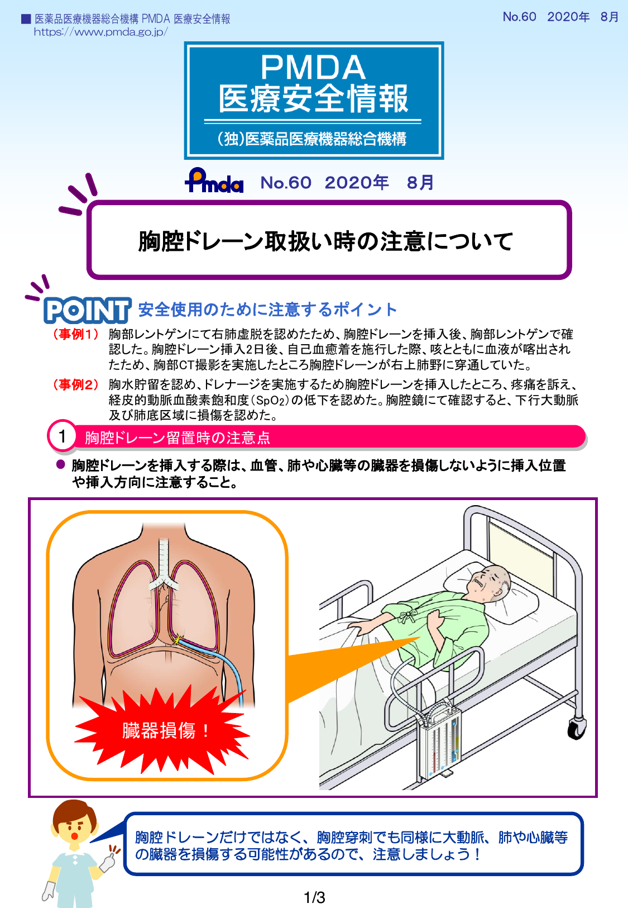
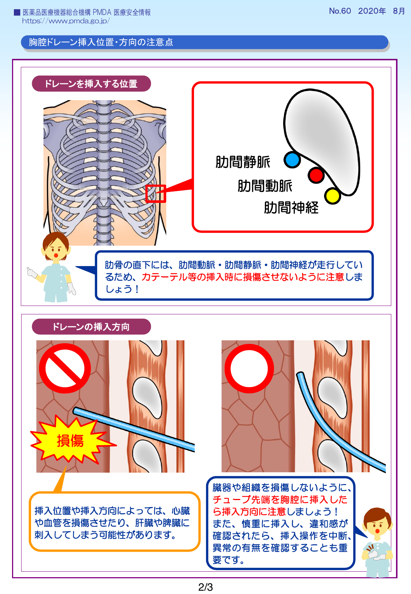
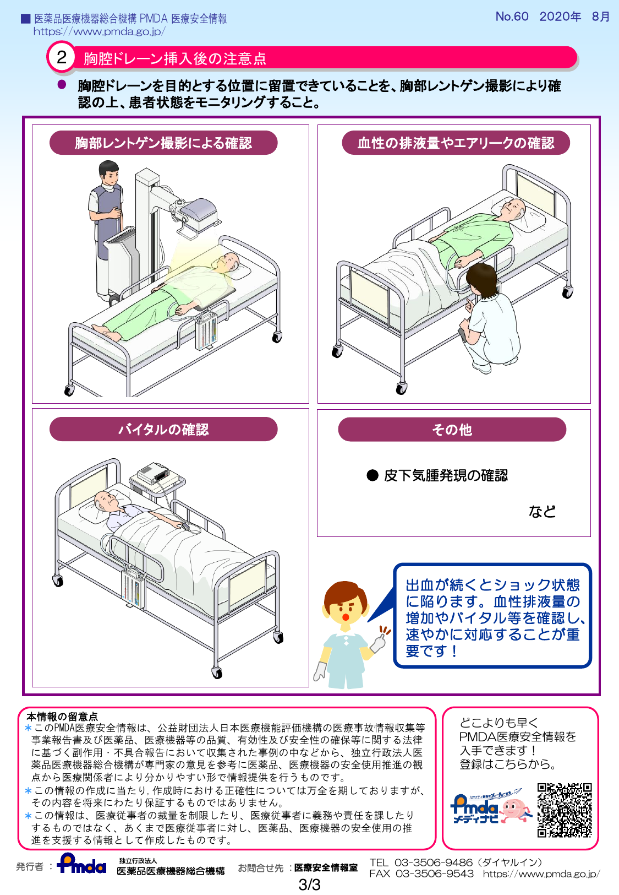

本ページは学習用の参考資料です
内容は概要的・教育目的のため、診療判断には必ず最新ガイドライン・原著論文などの一次情報をご確認ください。誤りや古い記載を見つけた場合は指導医にご相談ください。
1. ドレーンとは ― 抜去前に押さえる総論
ドレーン(drain)は、体腔内の滲出液・血液・空気を体外に誘導するチューブの総称。手術部位やリスクに応じて様々な種類が使い分けられます。
ドレーンの3つの目的
- 治療的ドレナージ: 膿瘍・血腫の排出
- 予防的ドレナージ: 術後の血液・滲出液貯留予防
- 情報的(インフォメーション)ドレナージ: 出血・吻合不全の早期発見
排液の3形式
| 方式 | 原理 | 代表例 |
|---|---|---|
| 受動的(passive) | 重力・毛細管現象 | Penrose、Pleats、シリコンドレーン開放 |
| 能動的(active)低圧 | 陰圧バルブ | J-VAC、SBバック、Hemovac |
| 能動的(active)持続陰圧 | 外部吸引器に接続 | 胸腔ドレーン(三連ボトル/デジタル機器) |
💡 抜去の鉄則: 「必要な期間 留置し、不要になったら速やかに抜く」。長期留置は感染源・組織損傷・瘻孔形成のリスク。
2. 抜去のタイミングをどう判断するか
「いつ抜くか」は部位・施設・症例で異なるが、共通する判断軸:
- 排液量: 一般に24時間で100-200 mL以下が目安(部位により異なる)
- 排液性状: 漿液性で清澄、血性・乳び性・腸液性・膿性でないこと
- 画像所見: CT/エコーで貯留・遺残腔がないこと
- 臨床経過: 発熱・感染兆候がないこと、吻合部不全を疑う所見がないこと
- 機能: 胸腔ドレーンは肺再膨張・エアリーク消失
部位別の目安(全体像)
| 部位 | 抜去目安(排液量) | 留置期間の目安 |
|---|---|---|
| 胸腔ドレーン | 200 mL/日以下 + エアリークなし + 肺膨張 | 術後2-5日 |
| 縦隔/心嚢ドレーン | 50-100 mL/日以下 | 術後1-3日 |
| 腹腔ドレーン(消化器) | 50-100 mL/日以下、アミラーゼ正常 | 術後3-7日 |
| 皮下ドレーン(SB) | 30-50 mL/日以下 | 術後2-4日 |
| Penroseドレーン | 排液性状で判断 | 術後2-3日(感染源なら長期) |
3. 部位別の注意点(タブ切替)
胸腔ドレーン 陰圧塞栓リスク最大
胸腔ドレーン抜去は気胸再発と空気塞栓(理論上)に最も注意。CV抜去と同じく、胸腔内陰圧が落とし穴。
抜去条件
- 排液 200 mL/日以下、性状 漿液性
- エアリーク(bubble)消失
- X線で肺完全膨張、気胸所見なし
- 水封式ドレーンの場合、吸引中止24時間後の再膨張維持確認
手技のコツ
- 体位: 半座位またはセミファウラー位
- 呼吸法: Valsalva(息こらえ + いきみ)または呼気終末のタイミングで一気に抜去
- 抜去直後: 即座にワセリンガーゼ + フィルムで気密シール(空気進入防止)
- 抜去後: 1-3時間後にX線で気胸の再発がないことを確認
⚠ NG行動: 抜去中に患者が吸気すると胸腔内陰圧で空気が引き込まれ気胸を起こす。必ず呼気時 or Valsalvaで抜去すること。
縦隔・心嚢ドレーン 心タンポナーデ警戒
心臓血管外科後の縦隔・心嚢ドレーン抜去では、術後出血の遅発化・心タンポナーデを警戒します。
- 抜去前24時間の排液量・性状を確認(急増していないか)
- 心エコーで心嚢液貯留がないことを確認
- 抜去後は心エコーフォローを行うことが多い
- 抜去後の急な血圧低下・頸静脈怒張・心音減弱 → タンポナーデを疑う
📌 抜去時の電気: 心嚢ドレーン抜去で短時間の不整脈(VPCなど)が出ることがある。心電図モニター下で実施。
腹腔ドレーン 瘻孔・吻合不全に注意
消化器外科では「ドレーン排液の性状」が吻合不全を最初に教えてくれる重要な情報源。
抜去前に確認するチェックリスト
- 排液量・性状の経時変化(腸液様・胆汁様・膿性は禁忌)
- 排液中アミラーゼ・リパーゼ(膵手術)、ビリルビン(肝胆道)
- CT/エコーで膿瘍・液体貯留がないこと
- 炎症反応(WBC, CRP)の改善
- 食事再開後も排液が安定していること
📌 ドレーン抜去のリスク: 抜去で初めて発覚する遅発性 縫合不全がある。抜去後数日は注意深く臨床経過を観察。
皮下ドレーン(SB, Hemovac, Penrose) 比較的安全
皮下ドレーンは深部腔とつながらないため、抜去合併症は最も少ない。ただし基本は同じ。
- 排液 30-50 mL/日以下で抜去判断
- 固定縫合糸を完全に切除してから抜去(残糸でドレーン断裂)
- 抜去時のドレーン先端の遺残確認(短くなっていないか、切断面が鋭利か)
- Penroseは安全ピンが付いているので脱落紛失に注意
4. ドレーン抜去 共通の基本手技
- 抜去条件の最終確認: 排液量・性状・画像・全身状態
- 説明と同意: 痛み・出血の可能性を説明
- 体位調整: ドレーン部位に応じた体位(胸腔は半座位、腹腔は仰臥位)
- 固定具除去: 縫合糸切除、固定テープ剥離
- 呼吸指示: 必要な部位(胸腔)では Valsalva または呼気停止
- 抜去: 一定速度でゆっくり引き抜く(無理な力をかけない)
- 先端確認: 全長が抜けたか、破損・遺残がないか
- ドレッシング: 胸腔・縦隔は気密性のあるドレッシング
- 記録と観察: 抜去日時、長さ、合併症の有無、次回観察項目
抜けない時の対応
- 固定糸の遺残を確認(最も多い原因)
- 癒着・組織嵌入の可能性 → 無理に引かない
- 少量の生食を注入してドレーン周囲を緩める(部位により)
- 切迫しない場合は画像確認 → IVR/外科コンサルト
5. 実際の事故事例 ― PMDA医療安全情報
独立行政法人 医薬品医療機器総合機構(PMDA)が公表している医療安全情報には、ドレーン関連の事故事例が複数収載されています。ここではドレーン抜去・取扱いに関連する代表的な2件を取り上げます。
📘 PMDA医療安全情報 No.60 ― 胸腔ドレーン取扱い時の注意について
事例 1 ― 肺穿通
胸腔ドレーンが肺実質を穿通したケース
右肺虚脱に対し胸腔ドレーンを挿入。2日後の自己血癒着術中に咳とともに血液喀出。胸部CTで胸腔ドレーンが右上肺野を穿通していたことが判明。
📌 学び: 挿入後の画像確認はあくまで「先端位置」であり、肺実質への穿通は見落とされうる。喀血や呼吸状態悪化があれば再評価を。
事例 2 ― 大動脈損傷
下行大動脈を損傷したケース
胸水ドレナージで胸腔ドレーンを挿入したところ、疼痛とSpO₂低下。胸腔鏡で下行大動脈と肺底区域に損傷を確認。
📌 学び: 肋骨の直下には肋間動静脈・神経が走行。挿入時は肋骨の上縁を狙う(肋骨直上ライン)。挿入方向は心臓・大血管を避け、慎重に進める。違和感あれば即中断。



📘 PMDA医療安全情報 No.62 ― PCPS/ECMOカニューレの抜去事例について
事例 1 ― 固定前の脱落
挿入術者と固定術者の連携不足で抜けたケース
PCPSカニューレの挿入と糸固定を別の術者が行っていたが、進捗の共有不足でカニューレを保持する者がいなくなり、自重で抜けてしまった。
📌 学び: 補助循環開始後はカニューレ自体の重みで容易に移動する。縫合糸で固定が完了するまでは必ず保持役を決めておく。役割分担を声に出して確認。
事例 2 ― 移送時の事故
ストレッチャー移送時に駆動装置との距離が離れて抜けたケース
ICU〜CT室の移送中、ストレッチャーと駆動装置(コンソール)の距離が離れ、回路が引っ張られてカニューレが抜けた。
📌 学び: 移送前に 統括リーダー + カニューレ監視役 + 駆動装置監視役 を割り当てる。事前のシミュレーションでトラブル対応を確認。
事例 3 ― 体位変換
体位変換でカニューレが10cm抜けたケース
日常的な体位変換時、カニューレが引っ張られて10cm抜けてしまった。
📌 学び: 体位変換は複数人で実施し、必ずカニューレ保持役を配置。回路の張力を常に観察。
💡 共通する学び: ドレーン・カニューレの事故の多くは 「複数人作業時の連携不足」 と 「体動・移送時の張力管理不足」 から発生する。役割分担を明確にし、声出し確認を徹底することが最大の予防策。
📖 出典: 独立行政法人 医薬品医療機器総合機構(PMDA)
PMDA医療安全情報 No.60(胸腔ドレーン取扱い時の注意について, 2020年8月)
PMDA医療安全情報 No.62(PCPS/ECMOカニューレの抜去事例について, 2022年3月)
https://www.pmda.go.jp/
※ PMDA医療安全情報は厚生労働省所管の独立行政法人により公表されている公的な医療安全情報資料です。
PMDA医療安全情報 No.60(胸腔ドレーン取扱い時の注意について, 2020年8月)
PMDA医療安全情報 No.62(PCPS/ECMOカニューレの抜去事例について, 2022年3月)
https://www.pmda.go.jp/
※ PMDA医療安全情報は厚生労働省所管の独立行政法人により公表されている公的な医療安全情報資料です。
6. ドレーン抜去 セルフチェックリスト
7. 理解度チェック(全7問)
問題 1 / 7
得点: 0 / 0
最終得点
0 / 7
8. 用語集
| 用語 | 意味 |
|---|---|
| 受動的ドレナージ | 重力・毛細管現象で排液(Penroseなど) |
| 能動的ドレナージ | 陰圧で吸引(J-VAC、SBバック、胸腔ドレーン) |
| Air leak | 胸腔ドレーンの水封部にbubbleが出る現象。肺瘻の存在 |
| 三連ボトル | 胸腔ドレーンの典型的システム(集液・水封・吸引調整) |
| Valsalva 法 | 声門閉鎖下にいきむ。胸腔内圧を陽圧化し空気引き込みを防ぐ |
| SBバック | 低圧持続吸引機能付き閉鎖式排液バッグの商品名 |
| J-VAC | ジャクソンプラット型陰圧ドレーンの商品名 |
| 遺残腔(dead space) | 術後に組織で埋まらず残った空間。感染・血腫の温床 |
| 縫合不全 | 消化管吻合の破綻。ドレーン排液性状の変化で発見されることが多い |